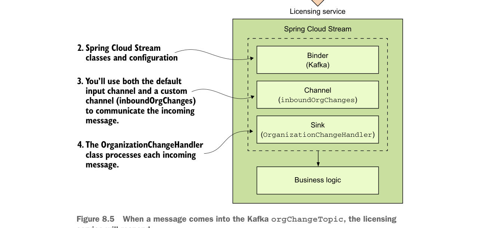

Khi một message đến Kafka
orgChangeTopic, licensing service sẽ phản hồi.Sau đó bạn cần cho licensing service biết rằng nó cần dùng Spring Cloud Stream để bind tới một message broker. Giống như organization service, chúng ta sẽ gắn annotation @EnableBinding lên bootstrap class của licensing service (licensing-service/src/main/java/com/thoughtmechanix/licenses/Application.java). Sự khác biệt giữa licensing service và organization service là giá trị bạn sẽ truyền vào annotation @EnableBinding, như thể hiện trong listing sau đây.
Tiêu thụ message bằng Spring Cloud Stream
package com.thoughtmechanix.licenses;
//Imports removed for conciseness
@EnableBinding(Sink.class)
public class Application {
//Code removed for conciseness
@StreamListener(Sink.INPUT)
public void loggerSink(
OrganizationChangeModel orgChange) {Annotation @EnableBinding cho service biết cần dùng các channel được định nghĩa trong interface Sink để lắng nghe các message đến.
Spring Cloud Stream sẽ thực thi method này mỗi khi một message được nhận từ input channel.